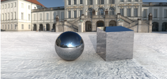
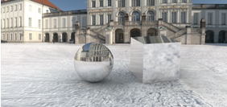

全局照明—基于图像的打光
使用基于图像打光时的全局照明效果最好。
基于图像的打光是一种部件渲染技术，使用图像作为光源、反射以及阴影的参考。
-
一般来说用作背景的图像将用作基于图像打光的参考
-
选定的图像被映射到包含要渲染部件的球面上
-
这个球面将作为内部光源来照亮部件
这将允许部件上的光源采用指定背景图像中的光源特性
 |
基于图像打光的概念
高动态范围图像较常规格式的图像包含了更多的照明信息，捕捉场景中所有的实际光源信息—包括自然光源与人造光源。
IBL 可以使用以下格式：
-
EXR 和 HDR(高动态范围图像)
鼓励使用高动态范围图像，因为高动态范围图像中包含更精细的颜色信息。
使用后，光源与反射中的颜色显示将更佳。

-
TIF、JPEG、LWI(低动态范围图像)
不推荐使用低动态范围图像，因为使用 LDR 图像时，会因为缺少颜色饱和度和深度而发生泛白现象。

使用场景编辑器对话框中的全局照明选项卡来编辑基于图像打光的参数，比如光源精度和颜色饱和度。